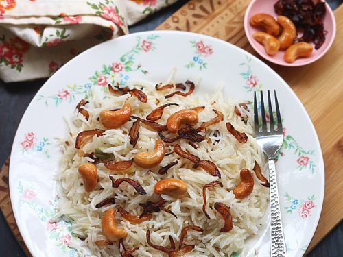

Ingredients
- Cooked rice: 2 cups (preferably cooled, leftover rice)
- Cashew nuts: 1/2 cup
- Onion: 1 medium, finely chopped
- Capsicum (bell pepper): 1 small, finely chopped
- Carrot: 1 small, finely chopped
- Green peas: 1/2 cup (fresh or frozen)
- Green chilies: 2, slit (optional)
- Garlic: 4 cloves, minced
- Ginger: 1-inch piece, minced
- Soy sauce: 2 tablespoons
- Vinegar: 1 teaspoon
- Pepper powder: 1/2 teaspoon
- Salt: to taste
- Oil: 3 tablespoons
- Spring onions: for garnish, chopped
Process
- step1: Finely chop the onion, bell pepper, and carrot.
- step2: Mince the garlic and ginger.
- step3: If using fresh green peas, blanch them in boiling water for 2-3 minutes and then drain. If using frozen peas, thaw them.
- step4: Heat 1 tablespoon of oil in a large pan or wok over medium heat.
- step5: Add the cashew nuts and stir-fry until they turn golden brown. Be careful not to burn them.
- step6: Remove the cashew nuts from the pan and set aside.
- step7: In the same pan, add the remaining 2 tablespoons of oil.
- step8: Add the minced garlic, ginger, and slit green chilies (if using). Sauté for 1-2 minutes until fragrant.
- step9: Add the finely chopped onions and sauté until they turn translucent.
- step10: Add the chopped carrots and stir-fry for 2-3 minutes.
- step11: Add the chopped bell pepper and green peas.
- step12: Stir-fry for another 2-3 minutes until the vegetables are cooked but still crisp.
- step13: Add the cooked rice to the pan with the vegetables. Gently mix to combine all the ingredients.
- step14: Pour in the soy sauce and vinegar. Stir well to evenly coat the rice and vegetables.
- step15: Add salt and pepper powder to taste. Mix well.
- step16: Add the fried cashew nuts and gently mix.
- step17: Stir-fry for another 2-3 minutes, allowing the flavors to meld together.
- step18: Garnish with chopped spring onions.